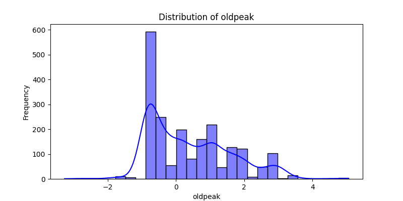

Introduction
The Heart Disease dataset contains medical records and aims to predict the severity of heart disease in patients. The target variable has five classes representing different levels of heart disease severity:
- Class 0: No heart disease
- Class 1: Mild heart disease
- Class 2: Moderate heart disease
- Class 3: Severe heart disease
- Class 4: Very severe heart disease
Key Insights
- Imbalanced dataset: Class 0 (No heart disease) is the most prevalent, accounting for 44.67% of patients.
- Class 1 (Mild heart disease) accounts for 28.80%, while Classes 3 and 4 (Severe and Very severe heart disease) are less common (11.63% and 3.04%, respectively).
- Understanding the class distribution is critical for balanced and accurate models.
Visualizations
This section includes visual aids such as bar charts or pie charts to depict the distribution of heart disease severity classes and other demographic insights.


Conclusion
The EDA reveals a significant class imbalance in the dataset, which may impact model performance. Consider techniques like resampling or class-weight adjustments to address this issue. Further exploration of demographic and medical features can uncover key factors affecting heart disease severity.